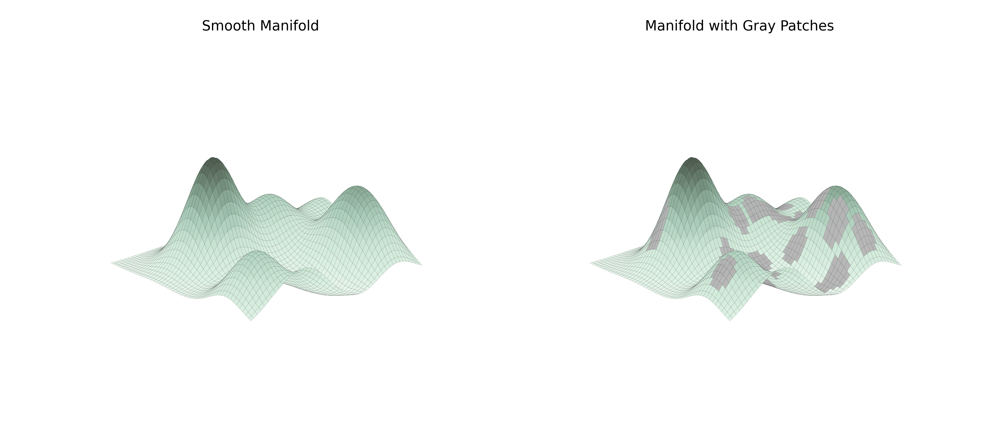

diffusion_swiss_roll manifold
figures4papers Cflows

extracted: pure cyan-teal family (#15c0c0/#15eac0/#15c095) — Principle 1 strict 色调一致
manifold_holes manifold
figures4papers RNAGenScape

extracted: mint #c0eac0 + cyan #c0eaea + grey — Principle 2 strict 低饱和